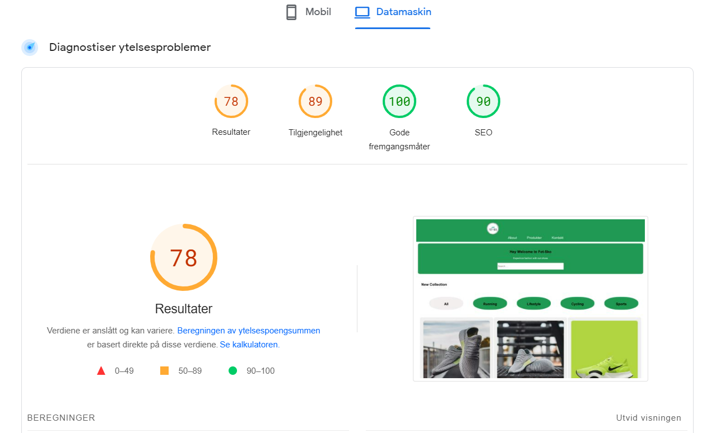
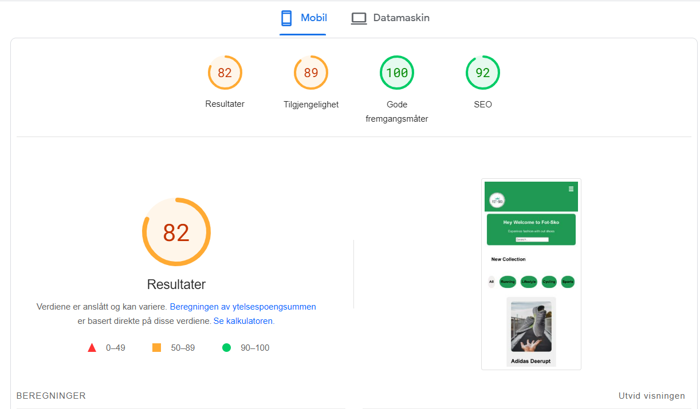
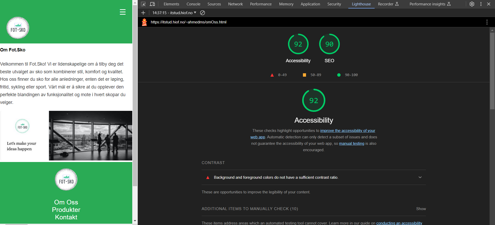
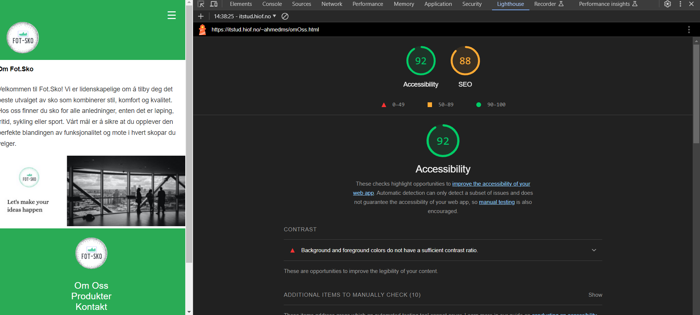

Hey Welcome to Fot-Sko
Experince fashion with out shoes
Nøkkelordundersøkelse
For å øke synlighet folk ser nettsiden min og målrette riktig målgruppe, har er den nøkkelordene jeg har funnet:
-
Søkeord 1: "Trendy fritidssko"
Dette nøkkelordet er valgt på grunn av trenden for fritidssko, og det vil hjelpe oss å nå ut til de som er interessert i mote og komfort.
-
Søkeord 2: "Høykvalitet sportsko"
Dette søkeordet fokuserer på kvalitet og passer for de som søker sports- eller treningsrelaterte sko.
-
Søkeord 3: "Lokal skobutikk i Halden"
Dette nøkkelordet inkluderer geografisk informasjon og vil hjelpe oss å nå lokale kunder som leter etter skobutikker i nærheten.
SEO Resultater fra Lighthouse
Nettstedet vårt har gjennomgått en SEO analyse ved hjelp av Lighthouse, og resultatene viser at vi har oppnådd en score på 90/100 både for mobil og desktop. Dette er en indikasjon på at nettstedet er godt optimalisert for søkemotorer, men jeg skal prøve å forbedre dett om det er mulig. Disse bilden under er det hoved siden. jeg har også analyserte OmOss, destop delen er også 90, og mobile er eneste som er 88. Tok ikke med bilden av den siden, synes disse to bildene viser mesteparten
Desktop Resultater
Her er et skjermbilde av SEO-resultatene fra Lighthouse for desktop-versjonen:
Mobil Resultater
Her er et skjermbilde av SEO-resultatene fra Lighthouse for mobilversjonen:
Tilgjengelighetsresultater fra Lighthouse (UU)
For å sikre at vårt nettsted er tilgjengelig for alle brukere, har vi gjennomført en tilgjengelighetsanalyse med Lighthouse. Denne ganger har jeg kjørt på den andre siden min som er omOss siden. Nedenfor er skjermbilder og detaljer som viser hvor godt nettstedet presterer på desktop og mobil, samt forslag til forbedringer:
Desktop Tilgjengelighetsresultater
Tilgjengelighetsresultatet for desktop-versjonen av nettstedet viser at vi har en score på 92/100. Dette indikerer et høyt nivå av tilgjengelighet, men vi må stadig jobbe for å forbedre dette.
Mobil Tilgjengelighetsresultater
For mobilversjonen har vi også en sterk tilgjengelighetsscore som er 92, men med forskjellige områder å fokusere på for forbedring sammenlignet med desktop.
Forbedringsområder
- Kontrastforbedringer: Noen tekst-elementer trenger bedre kontrast.
- Keyboard Navigasjon: Nettstedet må være fullt navigerbart ved bruk av tastatur.
- Aria-etiketter: ARIA-etiketter trenger å være tydelige for skjermlesere.